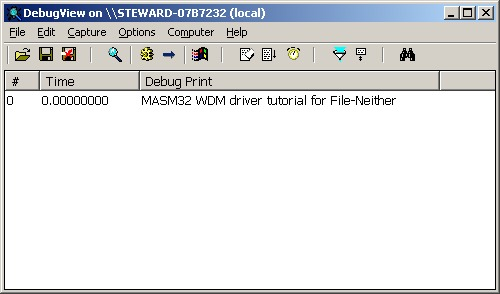
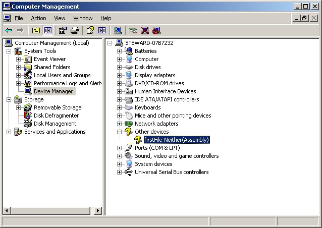
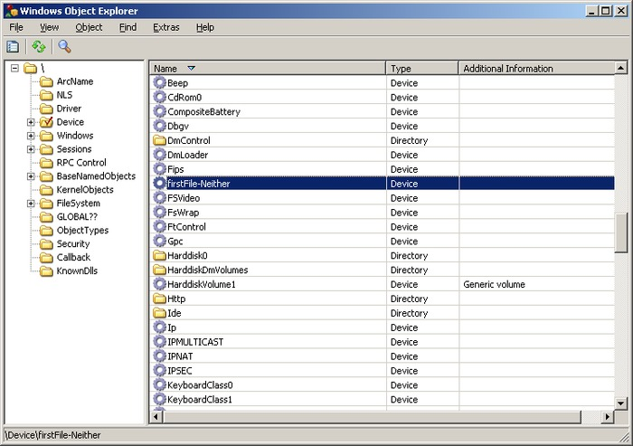
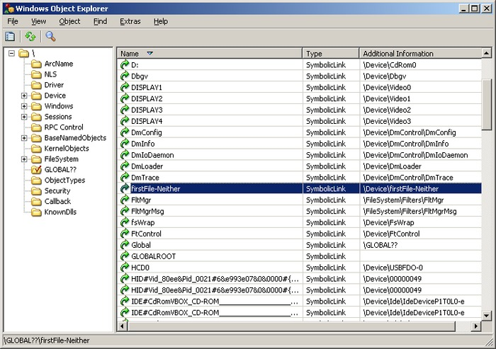
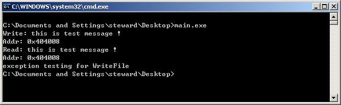
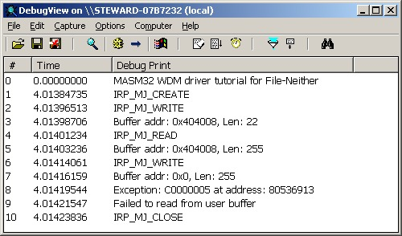

Windows Driver Model >> WDK 7.1 >> MASM32 >> Advanced
File(DO_NEITHER_IO)
[Github] https://github.com/steward-fu/gh_driver.git
| IRP | Buffer | Length |
|---|---|---|
| IRP_MJ_READ | (Irp) UserBuffer |
(IrpStack) Parameters.Read.Length |
| IRP_MJ_WRITE | (Irp) UserBuffer |
(IrpStack) Parameters.Write.Length |
main.asm
;//========================================================================================================
;// Basically, all of files downloaded from my website can be modified or redistributed for any purpose.
;// It is my honor to share my interesting to everybody.
;// If you find any illeage content out from my website, please contact me firstly.
;// I will remove all of the illeage parts.
;// Thanks :)
;//
;// Steward Fu
;// steward.fu@gmail.com
;// https://steward-fu.github.io/website/index.htm
;//========================================================================================================*/
.386p
.model flat, stdcall
option casemap:none
include c:\masm32\Macros\Strings.mac
include c:\masm32\include\w2k\ntstatus.inc
include c:\masm32\include\w2k\ntddk.inc
include c:\masm32\include\w2k\ntoskrnl.inc
include c:\masm32\include\w2k\ntddkbd.inc
include c:\masm32\include\wxp\wdm.inc
include c:\masm32\include\wxp\seh0.inc
includelib c:\masm32\lib\wxp\i386\ntoskrnl.lib
public DriverEntry
OurDeviceExtension struct
pNextDevice PDEVICE_OBJECT ?
szBuffer byte 1024 dup(?)
OurDeviceExtension ends
.const
DEV_NAME word "\","D","e","v","i","c","e","\","f","i","r","s","t","F","i","l","e","-","N","e","i","t","h","e","r",0
SYM_NAME word "\","D","o","s","D","e","v","i","c","e","s","\","f","i","r","s","t","F","i","l","e","-","N","e","i","t","h","e","r",0
.code
;//*** process open/close irp
IrpOpenClose proc uses ebx pOurDevice:PDEVICE_OBJECT, pIrp:PIRP
IoGetCurrentIrpStackLocation pIrp
movzx ebx, (IO_STACK_LOCATION PTR [eax]).MajorFunction
.if ebx == IRP_MJ_CREATE
invoke DbgPrint, $CTA0("IRP_MJ_CREATE")
.elseif ebx == IRP_MJ_CLOSE
invoke DbgPrint, $CTA0("IRP_MJ_CLOSE")
.endif
mov eax, pIrp
and (_IRP PTR [eax]).IoStatus.Information, 0
mov (_IRP PTR [eax]).IoStatus.Status, STATUS_SUCCESS
fastcall IofCompleteRequest, pIrp, IO_NO_INCREMENT
mov eax, STATUS_SUCCESS
ret
IrpOpenClose endp
;//*** process read/write irp
IrpReadWrite proc uses ebx ecx pOurDevice:PDEVICE_OBJECT, pIrp:PIRP
local bReadable:dword
local bWritable:dword
local dwLen:dword
local pBuf:dword
local pdx:PTR OurDeviceExtension
xor eax, eax
mov dwLen, eax
mov eax, pOurDevice
push (DEVICE_OBJECT PTR [eax]).DeviceExtension
pop pdx
IoGetCurrentIrpStackLocation pIrp
movzx ebx, (IO_STACK_LOCATION PTR [eax]).MajorFunction
.if ebx == IRP_MJ_WRITE
invoke DbgPrint, $CTA0("IRP_MJ_WRITE")
IoGetCurrentIrpStackLocation pIrp
push (IO_STACK_LOCATION PTR [eax]).Parameters.Write._Length
pop dwLen
mov eax, pIrp
push (_IRP PTR [eax]).UserBuffer
pop pBuf
invoke DbgPrint, $CTA0("Buffer addr: 0x%x, Len: %d"), pBuf, dwLen
mov bReadable, 0
_try
invoke ProbeForRead, pBuf, dwLen, 1
mov eax, pdx
mov ebx, pBuf
invoke memcpy, addr (OurDeviceExtension PTR [eax]).szBuffer, ebx, dwLen
mov bReadable, 1
_finally
.if bReadable == 0
invoke DbgPrint, $CTA0("Failed to read from user buffer")
.endif
.elseif ebx == IRP_MJ_READ
invoke DbgPrint, $CTA0("IRP_MJ_READ")
IoGetCurrentIrpStackLocation pIrp
push (IO_STACK_LOCATION PTR [eax]).Parameters.Read._Length
pop dwLen
mov eax, pIrp
push (_IRP PTR [eax]).UserBuffer
pop pBuf
invoke DbgPrint, $CTA0("Buffer addr: 0x%x, Len: %d"), pBuf, dwLen
mov bWritable, 0
_try
invoke ProbeForWrite, pBuf, dwLen, 1
mov eax, pOurDevice
push (DEVICE_OBJECT PTR [eax]).DeviceExtension
pop pdx
mov eax, pdx
mov ebx, pBuf
invoke memcpy, ebx, addr (OurDeviceExtension PTR [eax]).szBuffer, dwLen
mov bWritable, 1
_finally
.if bWritable == 0
invoke DbgPrint, $CTA0("Failed to write to user buffer")
.endif
.endif
mov eax, pIrp
push dwLen
pop (_IRP PTR [eax]).IoStatus.Information
mov (_IRP PTR [eax]).IoStatus.Status, STATUS_SUCCESS
fastcall IofCompleteRequest, pIrp, IO_NO_INCREMENT
mov eax, STATUS_SUCCESS
ret
IrpReadWrite endp
;//*** system will vist this routine when it needs to add new device
AddDevice proc pOurDriver:PDRIVER_OBJECT, pPhyDevice:PDEVICE_OBJECT
local pOurDevice:PDEVICE_OBJECT
local suDevName:UNICODE_STRING
local szSymName:UNICODE_STRING
invoke DbgPrint, $CTA0("MASM32 WDM driver tutorial for File-Neither")
invoke RtlInitUnicodeString, addr suDevName, offset DEV_NAME
invoke RtlInitUnicodeString, addr szSymName, offset SYM_NAME
invoke IoCreateDevice, pOurDriver, sizeof OurDeviceExtension, addr suDevName, FILE_DEVICE_UNKNOWN, 0, FALSE, addr pOurDevice
.if eax == STATUS_SUCCESS
invoke IoAttachDeviceToDeviceStack, pOurDevice, pPhyDevice
.if eax != NULL
push eax
mov eax, pOurDevice
mov eax, (DEVICE_OBJECT PTR [eax]).DeviceExtension
pop (OurDeviceExtension PTR [eax]).pNextDevice
mov eax, pOurDevice
and (DEVICE_OBJECT PTR [eax]).Flags, not DO_DEVICE_INITIALIZING
mov eax, STATUS_SUCCESS
.else
mov eax, STATUS_UNSUCCESSFUL
.endif
invoke IoCreateSymbolicLink, addr szSymName, addr suDevName
.endif
ret
AddDevice endp
;//*** it is time to unload our driver
Unload proc pDrvObj:PDRIVER_OBJECT
xor eax, eax
ret
Unload endp
;//*** process pnp irp
IrpPnp proc uses ebx pOurDevice:PDEVICE_OBJECT, pIrp:PIRP
local pdx:PTR OurDeviceExtension
local szSymName:UNICODE_STRING
mov eax, pOurDevice
push (DEVICE_OBJECT PTR [eax]).DeviceExtension
pop pdx
IoGetCurrentIrpStackLocation pIrp
movzx ebx, (IO_STACK_LOCATION PTR [eax]).MinorFunction
.if ebx == IRP_MN_START_DEVICE
mov eax, pIrp
mov (_IRP PTR [eax]).IoStatus.Status, STATUS_SUCCESS
.elseif ebx == IRP_MN_REMOVE_DEVICE
invoke RtlInitUnicodeString, addr szSymName, offset SYM_NAME
invoke IoDeleteSymbolicLink, addr szSymName
mov eax, pIrp
mov (_IRP PTR [eax]).IoStatus.Status, STATUS_SUCCESS
mov eax, pdx
invoke IoDetachDevice, (OurDeviceExtension PTR [eax]).pNextDevice
invoke IoDeleteDevice, pOurDevice
.endif
IoSkipCurrentIrpStackLocation pIrp
mov eax, pdx
invoke IoCallDriver, (OurDeviceExtension PTR [eax]).pNextDevice, pIrp
ret
IrpPnp endp
;//*** driver entry
DriverEntry proc pOurDriver:PDRIVER_OBJECT, pOurRegistry:PUNICODE_STRING
mov eax, pOurDriver
mov (DRIVER_OBJECT PTR [eax]).MajorFunction[IRP_MJ_PNP * (sizeof PVOID)], offset IrpPnp
mov (DRIVER_OBJECT PTR [eax]).MajorFunction[IRP_MJ_CREATE * (sizeof PVOID)], offset IrpOpenClose
mov (DRIVER_OBJECT PTR [eax]).MajorFunction[IRP_MJ_CLOSE * (sizeof PVOID)], offset IrpOpenClose
mov (DRIVER_OBJECT PTR [eax]).MajorFunction[IRP_MJ_WRITE * (sizeof PVOID)], offset IrpReadWrite
mov (DRIVER_OBJECT PTR [eax]).MajorFunction[IRP_MJ_READ * (sizeof PVOID)], offset IrpReadWrite
mov (DRIVER_OBJECT PTR [eax]).DriverUnload, offset Unload
mov eax, (DRIVER_OBJECT PTR [eax]).DriverExtension
mov (DRIVER_EXTENSION PTR [eax]).AddDevice, AddDevice
mov eax, STATUS_SUCCESS
ret
DriverEntry endp
end DriverEntry
.end
main.inf
;//======================================================================================================== ;// Basically, all of files downloaded from my website can be modified or redistributed for any purpose. ;// It is my honor to share my interesting to everybody. ;// If you find any illeage content out from my website, please contact me firstly. ;// I will remove all of the illeage parts. ;// Thanks :) ;/ ;// Steward Fu ;// steward.fu@gmail.com ;// https://steward-fu.github.io/website/index.htm ;//========================================================================================================*/ [Version] Signature=$CHICAGO$ Class=Unknown Provider=%MFGNAME% DriverVer=12/23/2016,1.0.0.0 [DestinationDirs] DefaultDestDir=10,System32\Drivers [Manufacturer] %MFGNAME%=DeviceList [SourceDisksFiles] main.sys=1,,, [SourceDisksNames] 1=%INSTDISK%,,, [DeviceList] %DESCRIPTION%=DriverInstall, *firstFile-Neither [DriverInstall.NT] CopyFiles=DriverCopyFiles [DriverCopyFiles] main.sys,,,2 [DriverInstall.NT.Services] AddService=FILEIO,2,DriverService [DriverService] ServiceType=1 StartType=3 ErrorControl=1 ServiceBinary=%10%\system32\drivers\main.sys [DriverInstall.NT.HW] AddReg=DriverHwAddReg [DriverHwAddReg] HKR,,SampleInfo,,"" [DriverInstall] AddReg=DriverAddReg CopyFiles=DriverCopyFiles [DriverAddReg] HKR,,DevLoader,,*ntkern HKR,,NTMPDriver,,main.sys [DriverInstall.HW] AddReg=DriverHwAddReg [Strings] MFGNAME="firstFile-Neither" INSTDISK="firstFile-Neither Disc" DESCRIPTION="firstFile-Neither(Assembly)"
Debug Log

Device Manager

Device

Symbolic Link

app.asm
;//========================================================================================================
;// Basically, all of files downloaded from my website can be modified or redistributed for any purpose.
;// It is my honor to share my interesting to everybody.
;// If you find any illeage content out from my website, please contact me firstly.
;// I will remove all of the illeage parts.
;// Thanks :)
;//
;// Steward Fu
;// steward.fu@gmail.com
;// https://steward-fu.github.io/website/index.htm
;//========================================================================================================*/
.386p
.model flat, stdcall
option casemap:none
include c:\masm32\Macros\Strings.mac
include c:\masm32\include\windows.inc
include c:\masm32\include\masm32.inc
include c:\masm32\include\user32.inc
include c:\masm32\include\msvcrt.inc
include c:\masm32\include\kernel32.inc
includelib c:\masm32\lib\user32.lib
includelib c:\masm32\lib\masm32.lib
includelib c:\masm32\lib\msvcrt.lib
includelib c:\masm32\lib\kernel32.lib
.const
DEV_NAME db "\\.\firstFile-Neither",0
ERR_OPEN_DRIVER db "failed to open firstFile-Neither driver !",0
SEND_MSG db "this is test message !",0
WRITE_MSG db "Write: %s",10,13,0
ADDR_MSG db "Addr: 0x%x",10,13,0
READ_MSG db "Read: %s",10,13,0
.data?
hFile dd ?
dwRet dd ?
szBuffer db 256 dup(?)
.code
start:
invoke CreateFile, offset DEV_NAME, GENERIC_READ or GENERIC_WRITE, FILE_SHARE_READ, 0, OPEN_EXISTING, FILE_ATTRIBUTE_NORMAL, 0
.if eax == INVALID_HANDLE_VALUE
invoke crt_printf, offset ERR_OPEN_DRIVER
invoke ExitProcess, 0
.endif
mov hFile, eax
invoke wsprintf, offset szBuffer, offset SEND_MSG
invoke StrLen, offset szBuffer
mov dwRet, eax
invoke crt_printf, offset WRITE_MSG, offset szBuffer
invoke crt_printf, offset ADDR_MSG, offset szBuffer
invoke WriteFile, hFile, offset szBuffer, dwRet, offset dwRet, 0
invoke crt_memset, offset szBuffer, 0, 255
invoke ReadFile, hFile, offset szBuffer, 255, offset dwRet, 0
invoke crt_printf, offset READ_MSG, offset szBuffer
invoke crt_printf, offset ADDR_MSG, offset szBuffer
;// exception testing
invoke crt_printf, $CTA0("exception testing for WriteFile")
invoke WriteFile, hFile, 0, 255, offset dwRet, 0
invoke CloseHandle, hFile
invoke ExitProcess, 0
end start
執行App

Debug Log
